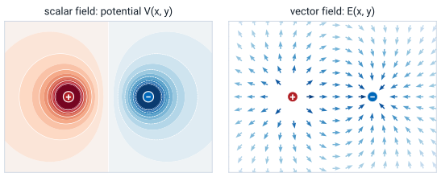
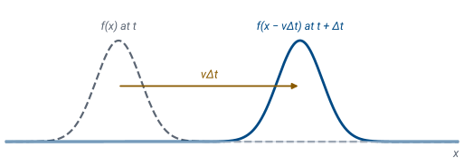

L2 - Fields, Parameters, and Field Quantities#
Fields, Parameters, and Field Quantities
Today we set up the language of fields and phasors that the rest of the course uses.
Lesson 2 · Module 1: Foundations · Maj Ellis · Dr. Neil Rogers
Learning Objectives
- I can recall the definition of scalar fields, vector fields, phasors, and Euler's identity.
- I can explain the basic terms and quantities used to describe electromagnetic fields.
Lesson 1 wrote down Maxwell’s equations in terms of four fields and said that circuit theory is their small-circuit limit. Before we can use either, we need a common language. Today we define what a field is, describe a traveling wave mathematically, and develop phasors, which represent a sinusoid of known frequency with a single complex number and turn derivatives in time into multiplication. Then we define the four field quantities in Maxwell’s equations, their units, and the three material properties that connect them. Every later lesson uses these definitions.
Where We Were
Lesson 1: Maxwell’s equations, in four fields:
The wavelength: \(\lambda = c/f\) in free space.
Lesson 1 introduced Maxwell’s equations, which relate the electric field \(\mathbf{E}\), the electric flux density \(\mathbf{D}\), the magnetic field \(\mathbf{H}\), the magnetic flux density \(\mathbf{B}\), and the current density \(\mathbf{J}\). It also showed that the wavelength sets the scale at which electromagnetic effects appear. Today we define each of those quantities carefully, starting with what it means for a quantity to be a field.
Scalar and Vector Fields
A field is the value of a quantity at every point in space, and at every instant.
A scalar field has a magnitude: temperature, potential \(V\).
A vector field has a magnitude and a direction: \(\mathbf{E}\), wind velocity.

A field is the continuum of values of a quantity as a function of position and time. A scalar field assigns a single number to each point: the temperature in a room, the air pressure over a wing, or the electric potential \(V\) near a pair of charges, shown at left as a colored map. A vector field assigns a magnitude and a direction to each point: the wind velocity over an airfield, or the electric field \(\mathbf{E}\) of the same two charges, shown at right as arrows. The two fields in the figure describe the same physical situation. Module 2 shows that the electric field points in the direction in which the potential decreases fastest, which you can see by comparing the two panels.
What a Wave Is
A wave is a time-varying field that continues to exist after its source stops, and so can carry energy.
Any function of \(x - vt\) keeps its shape and moves in \(+x\) at speed \(v\).

A wave is a time-varying field that continues to exist in the absence of the source that created it, and is therefore able to transport energy. To describe one, start with any shape \(f(x)\) at time \(t\). A time \(\Delta t\) later, the same shape has moved a distance \(v\Delta t\) in the \(+x\) direction, so \(f(x - v\Delta t)\) describes it: the value that was at \(x\) is now at \(x + v\Delta t\). A feature that sat at \(x = a\) now sits where \(x - v\Delta t = a\), which is \(x = a + v\Delta t\). In general, any function of \(x - vt\) is a wave moving in \(+x\) at speed \(v\), and any function of \(x + vt\) moves in \(-x\).
The Sinusoidal Wave
Symbol |
Name |
Units |
|---|---|---|
\(\omega = 2\pi f\) |
angular frequency |
rad/s |
\(\beta = 2\pi/\lambda\) |
phase constant |
rad/m |
The waves in this course are sinusoids. The argument of the cosine changes by \(2\pi\) over one period in time, so \(\omega = 2\pi f\), and by \(2\pi\) over one wavelength in space, so \(\beta = 2\pi/\lambda\). Factoring \(\omega\) out of the argument writes it as a function of \(t - x/v_p\), with \(v_p = \omega/\beta\), and \(\omega(t - x/v_p) = -\beta(x - v_p t)\) is a function of \(x - v_p t\). So by the previous frame, it is a wave moving in \(+x\) at the phase velocity \(v_p\). Substituting the two definitions gives \(v_p = (2\pi f)(\lambda/2\pi) = f\lambda\), which is the relation \(\lambda = v_p/f\). Lesson 5 derives the same result for a transmission line by following a crest.
Euler’s Identity
Euler’s identity connects the complex exponential to the sinusoids. We write the Taylor series of \(e^x\), which converges for every \(x\), and substitute \(x = j\theta\). The powers of \(j\) cycle through \(1, j, -1, -j\), so the even powers of \(\theta\) are real with alternating signs, and the odd powers are imaginary with alternating signs. Grouping the real terms and the imaginary terms, the real part is exactly the Taylor series of \(\cos\theta\), and the imaginary part is the Taylor series of \(\sin\theta\). Geometrically, \(e^{j\theta}\) is a point on the unit circle in the complex plane at angle \(\theta\) from the real axis.
Sinusoids From Exponentials
Replacing \(\theta\) with \(-\theta\) in Euler’s identity, and using \(\cos(-\theta) = \cos\theta\) and \(\sin(-\theta) = -\sin\theta\), gives the first line. Adding it to Euler’s identity cancels the sine terms and leaves \(2\cos\theta\); subtracting it cancels the cosine terms and leaves \(2j\sin\theta\). Dividing gives the two expressions above. They also say that \(\cos\theta = \text{Re}\left[e^{j\theta}\right]\), the real part of a point on the unit circle, which is the idea behind phasors.
Phasors
A sinusoid at a known frequency has only two things to specify: its amplitude \(A\) and its phase \(\phi\). By Euler’s identity, the cosine is the real part of a complex exponential. The exponent splits into a part that does not depend on time, \(j\phi\), and a part that does, \(j\omega t\). The time-independent factor \(A e^{j\phi}\) is the phasor \(\widetilde{V}\): a single complex number whose magnitude is the amplitude and whose angle is the phase. Every voltage and current in a circuit driven at one frequency shares the same factor \(e^{j\omega t}\), so we can work with the phasors alone and restore the time dependence at the end.
A Phasor and Its Sinusoid
The left panel shows the complex number \(\widetilde{V} e^{j\omega t}\). Its length is the amplitude \(A\), and it rotates counterclockwise at \(\omega\) radians per second; the faint arrow is the phasor \(\widetilde{V}\) itself, its position at \(t = 0\). The amber dot on the real axis is its real part, which is the voltage \(v(t)\) at this instant, and the same value appears as the amber dot on the sinusoid at right. Change \(\phi\) and the whole sinusoid shifts in time; change \(A\) and it grows or shrinks. A phasor is a snapshot of the rotating arrow at \(t = 0\), and that snapshot is enough to rebuild the whole signal.
Derivatives Become jω
The phasor of \(dv/dt\) is \(j\omega\widetilde{V}\).
A derivative in time becomes multiplication by \(j\omega\).
Because \(\widetilde{V}\) does not depend on time, differentiating the signal differentiates only \(e^{j\omega t}\), which brings down a factor of \(j\omega\). So the phasor of the derivative is \(j\omega\) times the phasor. This is the same rule that gives a capacitor the impedance \(1/j\omega C\) and an inductor \(j\omega L\) in circuit analysis. Lesson 4 uses it to turn the time derivatives in the transmission line equations into multiplications, which reduces partial differential equations to ordinary ones.
Worked Example: Adding Two Sinusoids
Worked example — the sum of a cosine and a sine
Two signals at the same frequency add to a third at that frequency, and phasors find it without trigonometric identities. First we write the sine as a cosine, using \(\sin\omega t = \cos(\omega t - 90^\circ)\), so both terms have the form \(A\cos(\omega t + \phi)\). Their phasors are \(3\angle 0^\circ = 3\) and \(4\angle{-90^\circ} = -j4\). Adding complex numbers adds their real and imaginary parts, so \(\widetilde{V} = 3 - j4\). In polar form, the magnitude is \(\sqrt{3^2 + 4^2} = 5\) and the angle is \(\tan^{-1}(-4/3) = -53.1^\circ\), so the sum is a cosine of amplitude 5 that lags \(\cos\omega t\) by \(53.1^\circ\).
Electric Field and Flux Density
Quantity |
Name |
Units |
|---|---|---|
\(\mathbf{E}\) |
electric field intensity |
V/m |
\(\mathbf{D}\) |
electric flux density |
C/m² |
\(\epsilon_0\) |
permittivity of free space |
\(8.854 \times 10^{-12}\) F/m |
The electric field intensity \(\mathbf{E}\) is the force per unit charge that a small test charge feels, so a charge \(q\) in the field feels the force \(q\mathbf{E}\). Its units are newtons per coulomb, which equal volts per meter. The electric flux density \(\mathbf{D}\) describes the same field in terms of the charge that produces it, in coulombs per square meter. The permittivity \(\epsilon\) of the material relates the two, and it describes how the material responds to an electric field. In free space \(\epsilon = \epsilon_0\); a material has a relative permittivity \(\epsilon_r\), for example 2.25 for the polyethylene in RG-58 cable. For a given charge, a larger \(\epsilon\) means a smaller \(\mathbf{E}\), which is why a dielectric increases a capacitor’s capacitance.
Magnetic Field and Flux Density
Quantity |
Name |
Units |
|---|---|---|
\(\mathbf{H}\) |
magnetic field intensity |
A/m |
\(\mathbf{B}\) |
magnetic flux density |
T = Wb/m² |
\(\mu_0\) |
permeability of free space |
\(4\pi \times 10^{-7}\) H/m |
A moving charge feels a magnetic force perpendicular to both its velocity and the magnetic flux density \(\mathbf{B}\), measured in teslas. The magnetic field intensity \(\mathbf{H}\) describes the same field in terms of the current that produces it, in amperes per meter. The permeability \(\mu\) relates the two, and it describes how the material responds to a magnetic field. Most materials, including copper, air, and the dielectrics in cables, have \(\mu_r \approx 1\); ferromagnetic materials such as iron have \(\mu_r\) in the thousands, which is why transformer cores are made of them. The two free-space constants together set the speed of light: \(c = 1/\sqrt{\mu_0\epsilon_0} = 3.00 \times 10^8\) m/s.
Current Density and Conductivity
Material |
\(\sigma\) (S/m) |
|---|---|
copper |
\(5.8 \times 10^7\) |
seawater |
about 4 |
polyethylene |
about \(10^{-15}\) |
The current density \(\mathbf{J}\) is the current per unit area flowing through a surface, in amperes per square meter. In a conductor it is proportional to the electric field, and the constant of proportionality is the conductivity \(\sigma\), in siemens per meter. This is Ohm’s law at a point, and Module 3 derives the circuit form \(V = IR\) from it. Conductivity spans more than twenty orders of magnitude, from copper, which carries current easily, to polyethylene, which is an insulator. The three material properties \(\epsilon\), \(\mu\), and \(\sigma\) describe everything a material does to an electromagnetic field in this course.
Simple Materials
Property |
\(\epsilon\), \(\mu\), \(\sigma\) do not depend on |
|---|---|
homogeneous |
position |
isotropic |
the direction of the field |
linear |
the strength of the field |
nondispersive |
frequency |
The relations \(\mathbf{D} = \epsilon\mathbf{E}\), \(\mathbf{B} = \mu\mathbf{H}\), and \(\mathbf{J} = \sigma\mathbf{E}\) are simple only when the material is simple. A homogeneous material has the same properties everywhere. An isotropic material responds the same way to a field in any direction, so \(\epsilon\) is a number rather than a matrix. A linear material responds in proportion to the field, so doubling \(\mathbf{E}\) doubles \(\mathbf{D}\). A nondispersive material has the same properties at every frequency. This course assumes all four unless a problem says otherwise, which is accurate for air, copper, and the dielectrics in common cables.
Summary
Symbol / idea |
What it is |
Number to remember |
|---|---|---|
Scalar, vector field |
A magnitude, or a magnitude and direction, at every point |
\(V\); \(\mathbf{E}\), \(\mathbf{H}\) |
Wave |
A function of \(x - vt\) |
moves in \(+x\) at speed \(v\) |
Sinusoidal wave |
\(A\cos(\omega t - \beta x + \phi)\) |
\(\omega = 2\pi f\), \(\beta = 2\pi/\lambda\), \(v_p = f\lambda\) |
Euler’s identity |
From the Taylor series of \(e^{j\theta}\) |
\(e^{j\theta} = \cos\theta + j\sin\theta\) |
Phasor |
Amplitude and phase as one complex number |
\(v(t) = \text{Re}[\widetilde{V} e^{j\omega t}]\) |
Time derivative |
Multiplies the phasor by \(j\omega\) |
\(\frac{dv}{dt} \to j\omega\widetilde{V}\) |
\(\mathbf{E}\), \(\mathbf{D}\) |
Electric field, flux density |
V/m, C/m²; \(\epsilon_0 = 8.854 \times 10^{-12}\) F/m |
\(\mathbf{H}\), \(\mathbf{B}\) |
Magnetic field, flux density |
A/m, T; \(\mu_0 = 4\pi \times 10^{-7}\) H/m |
\(\mathbf{J} = \sigma\mathbf{E}\) |
Ohm’s law at a point |
copper: \(5.8 \times 10^7\) S/m |
Practice
Where This Is Going
Lesson 3: when the wavelength is short compared to a circuit, a pair of wires becomes a transmission line.
Lesson 4: phasors turn the transmission line equations into a wave equation.
Today we set up the vocabulary: fields, waves, phasors, and the four field quantities with the three material properties that connect them. Lesson 3 uses the wavelength to decide when a pair of wires stops behaving like an ideal connection, and models it instead as a chain of small circuits with inductance and capacitance per meter, which come from \(\mu\) and \(\epsilon\). Lesson 4 then uses the phasor rule \(d/dt \to j\omega\) to solve that model, and the solution is a sinusoidal wave of exactly the form we wrote today.
Before Lesson 3, read sections 3.1 through 3.4 of Ellingson, Electromagnetics, Vol. 1.